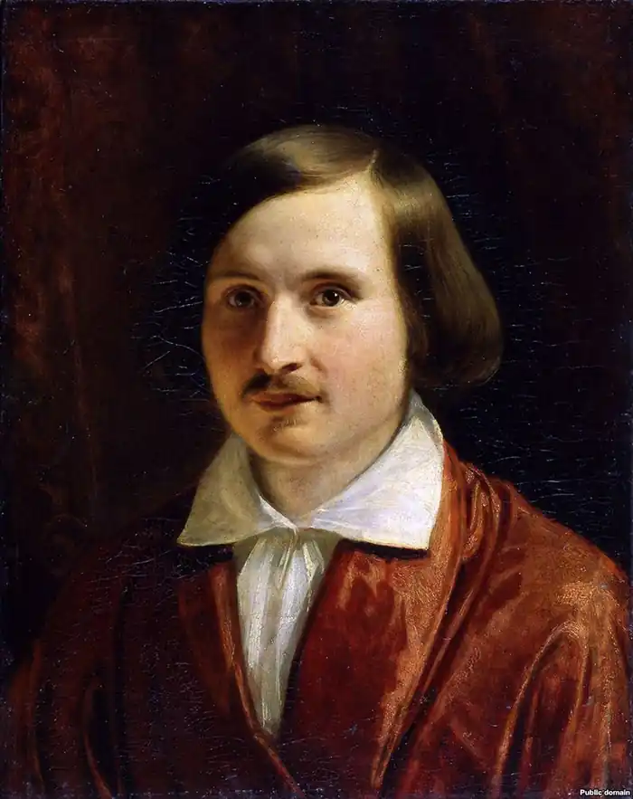
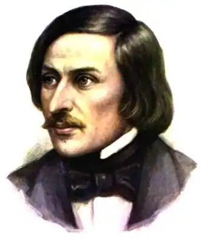

ГОГОЛЬ, Микола Васильович (Гоголь, Николай Васильевич — 20.03.1809, с. Великі Сорочинці Миргородського повіту Полтавської губернії — 21.02. 1852, Москва) — російськомовний письменник українського походження.
Гоголь народився в сім'ї поміщика середнього достатку. Дитячі роки проминули у маєтку батьків — Василівці, того ж Миргородського повіту (інша назва — Яновщина, утворена від прізвища власника — Гоголя-Яновського). Край був овіяний легендами, повір'ями, історичними переказами, які збуджували уяву. Поряд із Василівкою була Диканька (з нею пов'язане походження перших повістей Гоголя), де показували сорочку страченого Кочубея, а також дуб, біля якого нібито проходили побачення Мазепи з Мотрею. Культурним центром краю були Кибинці, маєток Д. Грощинського, далекого родича Гоголя, колишнього міністра. У Кибинцях розташовувалась велика бібліотека, був домашній театр, для якого батько Гоголя писав комедії, — все це сприяло пробудженню художніх та інтелектуальних зацікавлень майбутнього письменника.
У 1818-1819 pp. Гоголь разом із братом Іваном (який помер, очевидно, влітку 1820 р.) навчався у Полтавському повітовому училищі, а в травні 1821 р. вступив у новозасновану Гімназію вищих наук у Ніжині. Тут проявилася різнобічна художня обдарованість Гоголя: він навчався гри на скрипці, займався живописом, брав участь у спектаклях і як художник-декоратор, і як актор. Пробував він свої сили і в розмаїтих літературних жанрах (наприклад, трагедія "Розбійники", історична поема "Росія під татарським ігом", які не збереглися); водночас, випробовуючи свою спостережливість і талант комедіографа, писав сатиру (так само не збереглася) "Дещо про Ніжин, або Для дурнів закон не писаний". Проте бути письменником ще не входило у плани Гоголя, всі його поривання були пов'язані зі "службою державною". Потайний від природи, у душі він плекав надії на майбутню діяльність, переїзд в Петербург, ділячись ними лише з найближчими друзями. Гоголь мріяв про юридичну кар'єру: "Я бачив, що тут праці буде найбільше. Неправосуддя, найбільше у світі нещастя, понад усе розривало моє серце" (з листа до П. Косяровського від 3.10.1827 p.). Закінчивши у 1828 р. гімназію, Гоголь у грудні разом із іншим випускником, одним із найближчих приятелів О. Данилевським, поїхав у Петербург. Але вже перші тижні перебування у столиці глибоко його розчарували тодішнім духом чинопанування, дріб'язковістю та своєкорисливістю інтересів, загальною знеособленістю. Безуспішно намагаючись виклопотати місце, Гоголь робить перші літературні спроби: на початку 1829 р. з'явився вірш "Італія", який, найімовірніше, належить Гоголь, а навесні того самого року під псевдонімом В. Алов вийшла друком "ідилія в картинах" "Гани Кюхельгартен "з позначкою: "написано у 1827 р.". У цьому ще явно учнівському творі проглядає, попри все, справжнє почуття Гоголя, проступає багато мотивів його зрілої творчості, зокрема містяться перші натяки на конфлікт мрії та дійсності, який згодом буде всебічно розроблений у "петербурзьких повістях". Поема спричинила різкі та глузливі критичні відгуки, що посилило гнітючий настрій автора. У липні 1829 р. він спалив нерозпродані примірники книжки і несподівано поїхав за кордон (Травемюнд, Любек, Гамбург), а наприкінці вересня майже так само несподівано повернувся у Петербург. Ще до поїздки за кордон чи, точніше, після повернення, він зробив невдалу спробу вступити на сцену. Наприкінці 1829 р. Гоголю пощастило влаштуватися на службу у Департамент державного господарства та громадських будівель. У квітні наступного року він улаштувався у Департамент уділів (спочатку писарем, потім — помічником столоначальника), де служив до березня 1831 р. Перебування у канцеляріях глибоко розчарувало Гоголя у "службі державній", але збагатило його матеріалом для майбутніх творів, у яких відображені чиновницький побут і функціонування державної машини. На цей час обставини Гоголя суттєво виправилися; все більше часу він приділяє літературній праці. Вслід за першою повістю "Бісаврюк, або Вечір проти Івана Купала "Гоголь опублікував ряд художніх творів і статей: "Глава з історичного роману" ("Гетьман"; підпис 0000), "Глава з малоросійської повісті: Страшний Кабан"(підпис П. Глечик), "Жінка" (перший твір за підписом М. Гоголь) та ін. Водночас Гоголь познайомився з деякими російськими літераторами: у 1830 р. з В. Жуковським, П. Плетньовим, а 20 травня 1831 р. на вечорі у Плетньова його познайомили з О. Пушкіним. "Вечори на хуторі біля Диканьки" ("Вечера на хуторе близ Диканьки"; перша частина опубл. у 1831, друга — у 1832 pp.) не лише засвідчили дивовижно швидке визрівання гегелівського генія, а й вивели його на авансцену європейського романтизму. У свідомості російської публіки та почасти критики незрівнянна оригінальність "Вечорів... "на тривалий час створила їм репутацію художнього феномену, який не має прецендентів і аналогій. В. Бєлінський у 1840 р. писав: "...Вкажіть у європейській або в російській літературі хоч що-небудь схоже на ці перші спроби молодої людини, хоч що-небудь, що б могло наштовхнути його на думку писати так. Чи не є це, навпаки, цілковито новий небачений світ мистецтва?". Попри все першу спробу означити свою книгу з точки зору існуючих художніх тенденцій зробив особисто Г. ще у процесі роботи над нею: "Тут так захоплює всіх усе малоросійське..." (з листа до матері від 30.04.1829 р.). Гоголь у "Вечорах... "зрівнявся із загальноєвропейським романтичним напрямом у пошуках кореневих, первинних основ національної культури. Справа в тому, що українофільство попередників і сучасників Гоголя значною мірою мало ще суто етнографічний характер. Але Гоголь поставив перед собою завдання відкрити цільний і повноправний народний світ у вільно відтвореному ним власному художньому світі. Це була вільно-творча і, крім того, художньо зреалізована концепція України як цілого материка на карті всесвіту, з Диканькою як своєрідним його центром, як осереддям і національної духовної специфіки, і національної долі. Найбільше Гоголя підготував тут В. Наріжний своїми українськими романами "Бурсак" і "Два Івани, або Пристрасть до тяжб...", але яскравістю та експресією малюнка, виразністю колориту та характерів, не беручи до уваги вже викінченість і повноту образу України та наповненості філософською проблематикою, гоголівське зображення незмірно перевершувало побутописання Наріжного. З іншого боку, Гоголь рішучіше, ніж будь-хто інший, поривав з ідилічними уявленнями про Україну, які склалися в російській літературі на початку XIX ст. під впливом сентименталізму. При цьому, оскільки сама Україна набувала узагальненого, "символічного" значення, то й пов'язані з нею якості — соціальна гармонія, згода поміж поміщиком і селянами — сприймалися як взірцеві для всього російського життя. Навпаки, світові гоголівських "Вечорів..." споконвічно конфліктному, чужі будь-яка ідилічність і прекраснодушність. Удвох повістях — у "Вечорі проти Івана Купала" ("Вечер накануне Ивана Купала") та в "Страшній помсті" ("Страшная месть") — розвивалася (у казковій формі, що спиралася на міфологічну основу) романтична історія відчуження центрального персонажа — Петруся Безрідного, включаючи такі моменти, як злочин перед співвітчизниками, вбивство, розірвання людських і природних зв'язків. У трьох повістях — у "Сорочинському ярмарку" ("Сорочинская ярмарка"), "Майській ночі... "("Майская ночь...") та "Ночіперед Різдвом" ("Ночь перед Рождеством") — любовний сюжет, також позбавлений ідилічності, був близький до хитромудрих витівок закоханих (традиція, яка веде походження від фарсової комедії нового часу, від комедії дель арте і т. д.), але ця колізія ускладнювалася не лише звичайним у таких випадках опором людей старого покоління, а й участю, доброзичливою чи ворожою, ірреальних сил. І навіть дві найменші повісті циклу — "Зачароване місце" ("Заколдованное место") та "Пропала грамота" ("Пропавшая грамота") — побудовані на напівіронічному-напівсерйозному контрасті бажаного та реального, прагнень і результату, причому розвиток інтриги не обходиться без участі тих самих ірреальних сил. Узагалі втручанням і вторгненням фантастичного світу у людські справи позначені — тією чи іншою мірою — всі повісті "Вечорів...", за винятком однієї — "Івана Федоровича Шпоньки та його тітоньки", повісті, яка звістила вже про інші художні принципи. Уже в межах "Вечорів... "повістю "Іван Федорович Шпонька... "("Иван Фёдорович Шпонька...") проглядався подальший розвиток гоголівської творчості, який виражав водночас поворот усієї російської літератури до реалізму. Замість сільського середовища виступило середовище поміщицьке, маломаєтне та чиновницьке; замість поетичної, чуттєвої історії хитромудрих витівок закоханих — дрібні клопоти і неприємності, повсякденний побут; замість різких у своїй визначеності характерів — вульгарність і безликість обивателів. Цей напрям зі всією силою розкрито повістями "Миргорода" ("Миргород", 1835) і почасти "Арабесок" ("Арабески", 1835), де, проте, вульгарність і повсякденність поєдналися з напруженим пафосом, гротескним зламом сюжетних і розповідних планів, з тривожним, катастрофічним духом столичного, петербурзького життя. За властивістю свого таланту Гоголя із самого початку тяжів до своєрідних регіональних символів, і, таким чином, на його карті всесвіту, поряд із Диканькою, з'явилися нові поетичні материки — Миргород і Петербург. У повістях миргородського циклу "Старосвітські поміщики" ("Старосветские помещики"), "Повість про те, як посварився Іван Іванович з Іваном Никифоровичем" ("Повесть о том, как поссорился Иван Иванович с Иваном Никифоровичем") і "петербурзьких повістях" (слід зауважити, що останнього означення немає в Г. і воно закріпилось у критиці вже після його смерті) "Портрет" ("Портрет"), "Записки божевільного" ("Записки сумасшедшего") і "Невський проспект" ("Невский проспект") відбувається рішуча перебудова сентиментальних конфліктів, а також суттєва зміна типажу та мовного стилю. У "Старосвітських поміщиках " перед нами знову, як у "Ганці Кюхельгартені", ідилічне середовище з нескладними, невибагливими інтересами, простими радощами, природним життям на лоні щедрої природи, чиї дари, здавалось би, не можуть вичерпати жодне марнотратство та розкрадання ("...благословенна земля спороджувала всього без ліку, Афанасію Івановичу та Пульхерії Іванівні так мало було треба, що всі ці страшні крадіжки видавалися зовсім непомітними...").